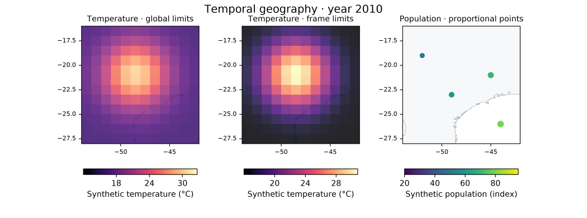

Original temporal geography and regional atlas

Synthetic climate animation, own regional multi-page PDF, SVG map composition and manifest. Individual PNG frames and regional SVG pages (South, North, Northeast) are included to inspect/reproduce the export.


Generated with examples/temporal_atlas.py using the installed Azimlib. Climate values, population indexes and point areas are original deterministic synthetic fixtures, Copyright (c) 2026 Kernerian, BSD-3-Clause. Boundaries/coastlines use separately credited Natural Earth public- domain data; fonts/colormaps retain DejaVu/CC0 notices. No real demographic or climate measurements are implied. See contracts.
Reproduce in a new output directory:
python examples/temporal_atlas.py --output outputs/temporal
python examples/temporal_atlas.py --output outputs/temporal-live --show
Gallery PNGs and PDF first-page render were inspected. A strict independent PDF reader verified three pages and exact attached font notices. Programmatic Tk/Qt playback passed in Windows; this does not mark Linux/macOS or human fluency as validated. No video encoder is bundled or actual codec claimed by this example.